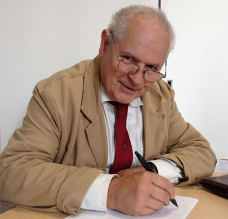
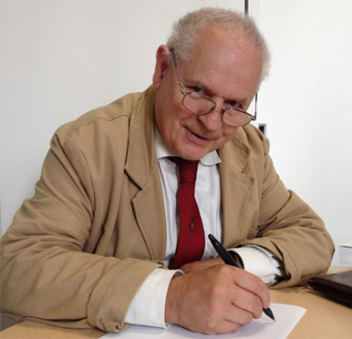
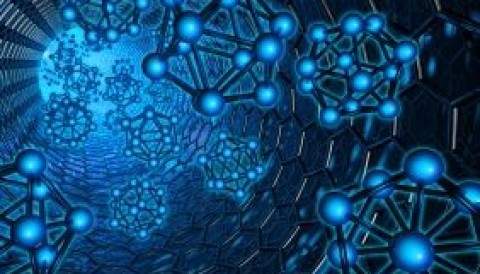
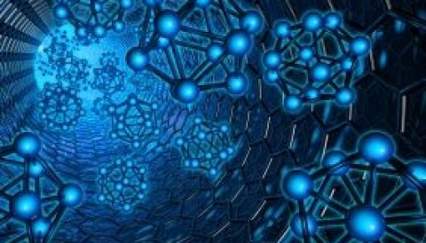
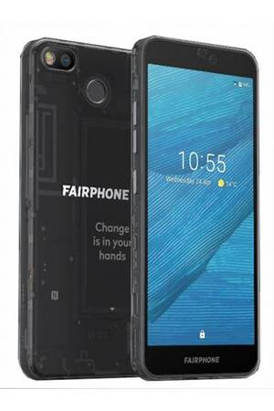
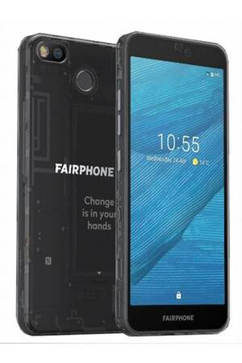

Administrateur
Jerome
inscrit(e) le 21/02/2004
Jerome
inscrit(e) le 21/02/2004
//: Comme vous le savez, l'impact environnemental de la technologie ne cesse de croître. Il faut trouver des moyens de stopper cette pollution.
Même si certains fabriquants suivent deja le concept de Green IT (ce qui rend la production de materiel électronique respectueuse de l'environnement), la pollution augmente encore.
Je fait donc appel aux esprits scientifiques du forum pour trouver des solutions face à la pollution de la technologie. Si vous avez des idées, partagez les sur cette page, merci.
Même si certains fabriquants suivent deja le concept de Green IT (ce qui rend la production de materiel électronique respectueuse de l'environnement), la pollution augmente encore.
Je fait donc appel aux esprits scientifiques du forum pour trouver des solutions face à la pollution de la technologie. Si vous avez des idées, partagez les sur cette page, merci.
Claude
inscrit(e) le 01/11/2017
inscrit(e) le 01/11/2017
//: Bonjour Jerome, la pollution des déchets électroniques est un facteur important de la pollution de la technologie.
Il existe pourtant une alternative simple à ce cycle néfaste qui consiste à produire des produits neufs puis à s’en séparer après un court cycle de vie, c'est le reconditionnement informatique, qui consiste, par exemple, à acheter des ordinateurs d'occasion plutôt que des neufs.
Il existe pourtant une alternative simple à ce cycle néfaste qui consiste à produire des produits neufs puis à s’en séparer après un court cycle de vie, c'est le reconditionnement informatique, qui consiste, par exemple, à acheter des ordinateurs d'occasion plutôt que des neufs.
Michelle
inscrit(e) aujourd'hui
inscrit(e) aujourd'hui
//: Bonsoir Claude, bonsoir Jerome. Je suis américaine et dans mon pays il existe un programme nommé Energy Star qui permet de réduire les émissions de gaz à effet de serre en identifiant les produits offrant une éfficacité énergetique supérieure.

Cela permet de diminuer la consommation d'energie, donc la pollution que la production d'électricité entraîne diminue aussi.
Cela permet de diminuer la consommation d'energie, donc la pollution que la production d'électricité entraîne diminue aussi.
Didier
inscrit(e) le 17/04/2000
inscrit(e) le 17/04/2000
//: Je suis Didier et je fais du recyclage. Mon action aide le monde car les composants que je recycle ne vont pas polluer.
 Stephane
Stephane inscrit(e) le 05/12/2010
//: Bravo Didier !
Fred
inscrit(e) le 01/01/2010
inscrit(e) le 01/01/2010
//: Bonsoir! Etant chercheur en informatique je conseille à toutes les personnes ayant un ordinateur d'utiliser la fonction "veille prolongée", cela reduira la consommation de votre appareil.
D'autre part, mes études et celles de mes collègues nous ont menés à decouvrir qu'utiliser les nanotechnologies dans l'electronique éviterait l'utilisation de produits toxiques dans les composants et ameliorerait la durabilité des produits.

Cela est néanmoins actuellement impossible car on ne maîtrise pas assez les nanotechnologies.
D'autre part, mes études et celles de mes collègues nous ont menés à decouvrir qu'utiliser les nanotechnologies dans l'electronique éviterait l'utilisation de produits toxiques dans les composants et ameliorerait la durabilité des produits.

Cela est néanmoins actuellement impossible car on ne maîtrise pas assez les nanotechnologies.
Lucie
inscrit(e) le 30/07/2012
inscrit(e) le 30/07/2012
//: Bonjour, je suis membre de l'association mais également manager d'un produit éco-friendly: le Fairphone.

C'est un smartphone fait à partir de matériaux recyclés. De plus, toutes les pièces sont remplaçables, ce qui lui donne une très bonne durée de vie.

C'est un smartphone fait à partir de matériaux recyclés. De plus, toutes les pièces sont remplaçables, ce qui lui donne une très bonne durée de vie.